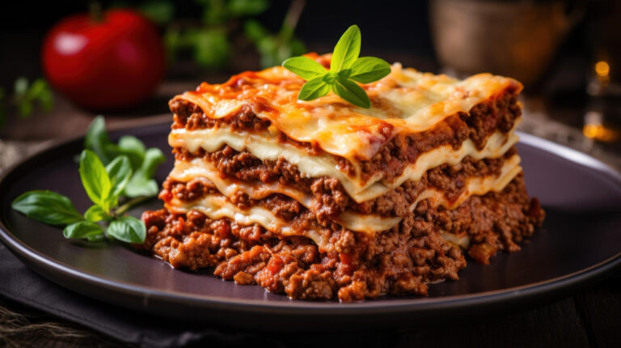

Ingredientes
- 500g de massa para lasanha
- 500g de carne moída
- 2 colheres de sopa de óleo
- 1 cebola picada
- 2 dentes de alho picados
- 1 lata de molho de tomate
- 200g de queijo mussarela fatiado
- 200g de presunto fatiado
- 1 colher de chá de sal
- Pimenta-do-reino a gosto
- Queijo ralado para polvilhar
Modo de Preparo
- Em uma panela, aqueça o óleo e refogue a cebola e o alho até dourar.
- Adicione a carne moída e cozinhe até que ela esteja bem dourada.
- Acrescente o molho de tomate, tempere com sal e pimenta e deixe cozinhar por 10 minutos. Reserve.
- Cozinhe a massa da lasanha conforme as instruções da embalagem e escorra.
- Em um refratário, espalhe uma camada de molho de carne, seguida por uma camada de massa.
- Adicione uma camada de presunto e queijo, depois repita as camadas até acabar os ingredientes, finalizando com molho e queijo ralado por cima.
- Leve ao forno preaquecido a 180°C por 20-30 minutos ou até dourar bem por cima.
- Retire do forno, deixe descansar por 5 minutos e sirva quente.